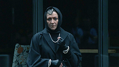

S12 E1 - Multiply Thy Pain
After multiple failed attempts of IVF, actress Anna Victoria Alcott wants nothing more than to start a family. As the buzz around her recent film grows, she fears that something may be targeting her - and her pursuit of motherhood.
S12 E2 - Rockabye
It’s awards season and Anna is primed to be a major player in contention. After a frightening encounter convinces her that she’s being followed, she begins to question who she can trust.
S12 E3 - When the Bough Breaks
As Anna and Dex settle into their Hamptons sanctuary, the comfort begins to fade. Her circle of trust is slowly shrinking, and doubt creeps into Anna’s head - could the evil be right under her nose?
S12 E4 - Vanishing Twin
With help from Siobhan, a major announcement helps restore Anna’s public image. Behind closed doors however, something powerful seems to be taking over.

S12 E5 - Preech
Anna senses the dark presence closing in on her, closer than ever. Ms. Preecher reveals pieces of her past and may know the truth about what’s happening to Anna and Dex.